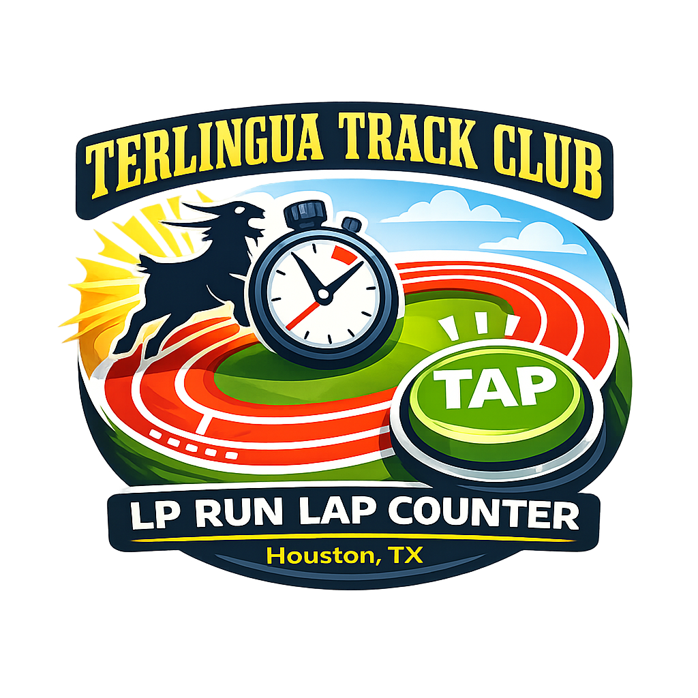

How to use the LP Run tools before, during, and after the race.
Load the LP Run app before the race starts so your phone is awake, the page is ready, and you are not scrambling at the horn.
Put in the runner’s full name. Add age, division, sex, and club if needed. The app will auto-fill age group.
You do not manually pick the lane anymore. The app assigns it automatically: Open runners under 40 go to Lane 5, runners age 40 and up go to Lane 1, and Rubens and Clydesdale always go to Lane 1.
The event duration should usually be set to 33:20 unless the race director says otherwise.
Start the timer as the race begins. After that, the app shows elapsed time, countdown, laps, split data, and running distance.
Each time your runner completes a full lap and crosses the line, tap the big Lap button once.
If you accidentally add a lap, use Undo Lap right away. Do not use it casually. It is for actual tap errors.
Once the race is rolling, leave the runner details alone unless you are resetting before a fresh attempt. Lane is handled automatically based on the runner info you entered.
The app no longer uses the old rounded inside lane idea. It now uses the measured track math in feet first.
Lane 1 is calculated as full laps multiplied by 1312.3 feet, plus any final partial distance after the horn.
Lane 5 is calculated as full laps multiplied by 1400.9 feet, plus any final partial distance after the horn.
The app still shows meters or kilometers for convenience, but the official internal lap math is based on the measured feet values above.
At the horn, full lap counting is done. The app can still accept a partial if the lap counter is in a position to enter it.
If the lap counter can obtain the partial distance, enter it in the app and finalize the result as usual.
If the counter does not have the partial, the run can still be submitted and the partial can be added or corrected later by the designated finish official.
Use Finalize Result when the partial is entered and correct. If the partial will be handled later, the separate partial workflow can complete that step after submission.
The app first tries to save the result to the Google Sheet, then prepares a share summary and CSV.
The extra test popup is gone. You now get one simple “are you sure” confirmation at submit time so the flow is cleaner.
That single prompt is your last check to make sure the result is ready to send.
The app keeps the pending result on the device and can retry later. The status box will tell you whether it saved successfully.
The partial workflow is not part of the main lap counter screen. It lives inside the app’s More area.
Only users who have partial access will see that option in More. Regular lap counters do not need to use it unless they are assigned that role.
A designated finish official can use that tool to add missing partials or override an existing one if the measured value is better.
This gives you both workflows: counters can enter partials when they can, and the finish official can clean up or complete the final distances afterward.